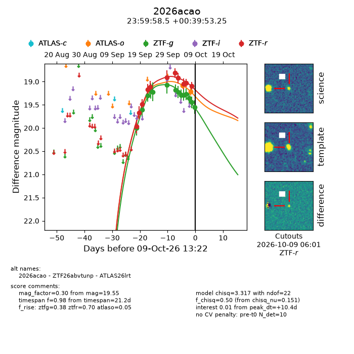
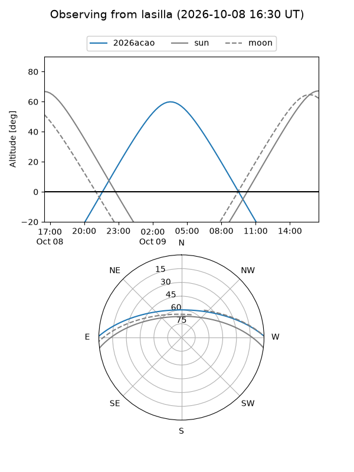
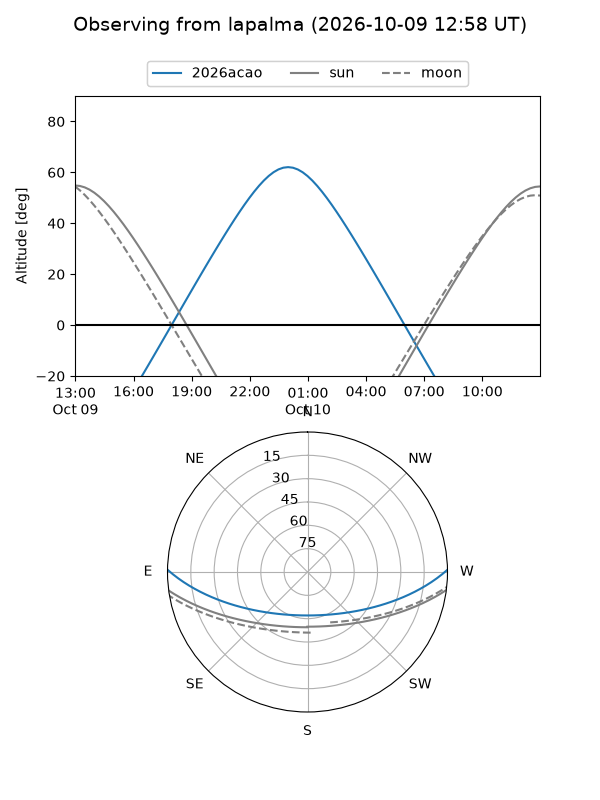
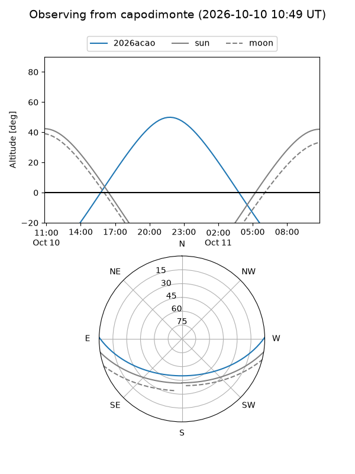
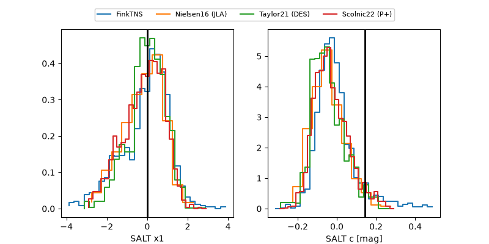

2026acao
Target 2026acao at 2026-10-09 13:25
Aliases and brokers:
FINK-ZTF: ztf.fink-portal.org/ZTF26abvtunp
Lasair-ZTF: lasair-ztf.lsst.ac.uk/objects/ZTF26abvtunp
ALeRCE-ZTF: alerce.online/object/ZTF26abvtunp
YSE-PZ: ziggy.ucolick.org/yse/transient_detail/2026acao
TNS name: wis-tns.org/object/2026acao
Direct TNS query: direct search
alt names
ZTF26abvtunp (ztf,fink_ztf)
2026acao (tns,yse)
ATLAS26lrt (atlas)
Coordinates:
equatorial (ra, dec) = 359.9938,+0.66479
equatorial (HMS+DMS) = 23:59:58.52,+00:39:53.25
galactic (l, b) = (96.8491,-59.57534)
Flags:
peak dt: +10.4
Photometry:
last atlaso=19.21, ztfg=19.55, ztfr=19.10
2 atlaso, 14 ztfg, 11 ztfr detections
Lightcurve

Visibility



Additional plots
